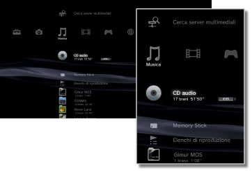

Musica > Categoria Musica
Categoria Musica
Sotto  (Musica) sono visualizzate le seguenti icone. Le icone visualizzate variano in base alle condizioni di utilizzo.
(Musica) sono visualizzate le seguenti icone. Le icone visualizzate variano in base alle condizioni di utilizzo.

 |
(Nome del titolo) | Consente di visualizzare il pannello di controllo in formato mini. Questa icona è visualizzata solo durante la riproduzione di contenuto musicale. |
|---|---|---|
 |
Cerca server multimediali | Consente di avviare la ricerca di server multimediali DLNA connessi alla stessa rete. |
 |
Server multimediale | Consente di connettersi ai server multimediali DLNA e riprodurre la musica memorizzata. L'icona visualizzata dipende dal tipo di server. |
 |
(nome del titolo) | Riproduce un Super Audio CD. |
| (titolo del CD) | Riproduce un CD audio. | |
 |
Disco di dati | Consente di riprodurre i file musicali salvati su dischi registrabili compatibili, ad esempio CD-R o DVD-R. |
|
Disco DSD | Consente di riprodurre file musicali in formato DSD salvati su dischi compatibili, ad esempio DVD-R. |
 |
Memory Stick™ | Riproduce file musicali salvati su supporti Memory Stick™.* |
 |
SD Memory Card | Riproduce file musicali salvati su SD Memory Card.* |
 |
CompactFlash® | Riproduce file musicali salvati su CompactFlash®.* |
 |
PSP™ (PlayStation®Portable) | Riproduce file musicali salvati sui supporti Memory Stick™ del sistema PSP™. |
 |
PSP™ (PlayStation®Portable) | Riproduce file musicali salvati nella memoria di sistema del sistema PSP™go. |
 |
Fotocamera digitale | Riproduce file musicali salvati su una fotocamera digitale. |
 |
WALKMAN®/ATRAC Audio Device (WALKMAN®) | Consente di riprodurre file musicali salvati su un WALKMAN®/ATRAC Audio Device (WALKMAN®). |
 |
ATRAC Audio Device | Consente di riprodurre file musicali salvati su un ATRAC Audio Device. |
 |
Dispositivo USB | Riproduce file musicali salvati su un dispositivo di archiviazione USB. |
 |
Elenchi di riproduzione | È possibile creare un elenco di riproduzione, modificare o riprodurre elenchi di riproduzione già creati. |
| (cartella) | Questa icona viene visualizzata per le cartelle create sul supporto di memorizzazione utilizzando un PC. | |
 |
(file salvati nella memoria di sistema) | Riproduce file musicali salvati nella memoria di sistema del sistema PS3™. Quando sono disponibili dati di immagine, vengono visualizzate immagini in miniatura. |
| * |
Con alcuni modelli del sistema PS3™, per utilizzare supporti di memorizzazione è necessario disporre di un adattatore USB appropriato (non in dotazione). Quando utilizzato con un adattatore USB, il supporto di memorizzazione viene visualizzato come |
|---|
 (Dispositivo USB).
(Dispositivo USB).Note
- Per ulteriori informazioni sullo standard DLNA, vedere
 (Impostazioni) >
(Impostazioni) >  (Impostazioni di rete) > [Connessione al server multimediale] della presente guida.
(Impostazioni di rete) > [Connessione al server multimediale] della presente guida. - In rari casi, i dischi e altri supporti potrebbero non funzionare correttamente quando riprodotti nel sistema PS3™. Tale problema è causato principalmente da variazioni del processo produttivo o della codifica del software.
- Quando l'audio dei Super Audio CD viene riprodotto utilizzando il Connettore DIGITAL OUT (OPTICAL), la riproduzione è di tipo semplice (44,1 kHz, 16 bit).
Avviso
Su alcuni sistemi PS3™ non è consentita la riproduzione di Super Audio CD. Per ulteriori informazioni, consultare [Tipi di dischi riproducibili].